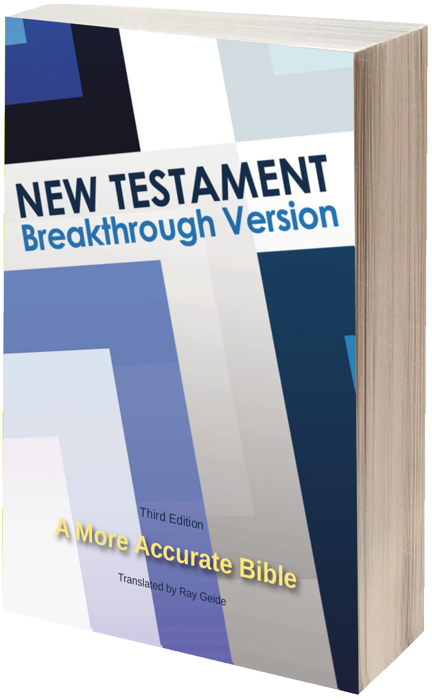
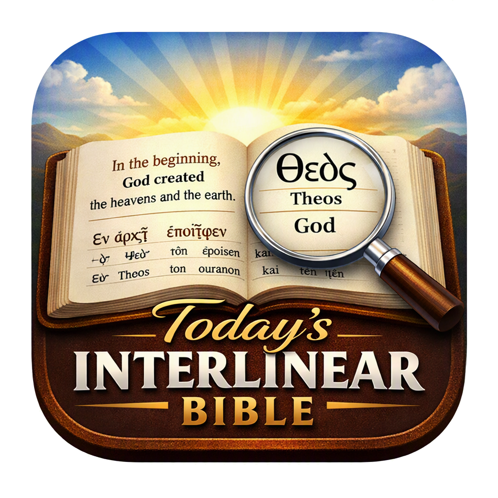

Bible Underground Reader
Read the Breakthrough Version, Breakthrough KJV, and Today's Bible offline in your browser.
Open ReaderGreek Lexicon
Today's Greek Dictionary with Strong’s numbers, original definitions, and traditional sources (Dodson, Mounce, Strong’s, Thayer).
Open Lexicon
Interlinear Bible
Word-by-word Greek with morphology, Strong’s numbers, and the Breakthrough translations.
Open Interlinear